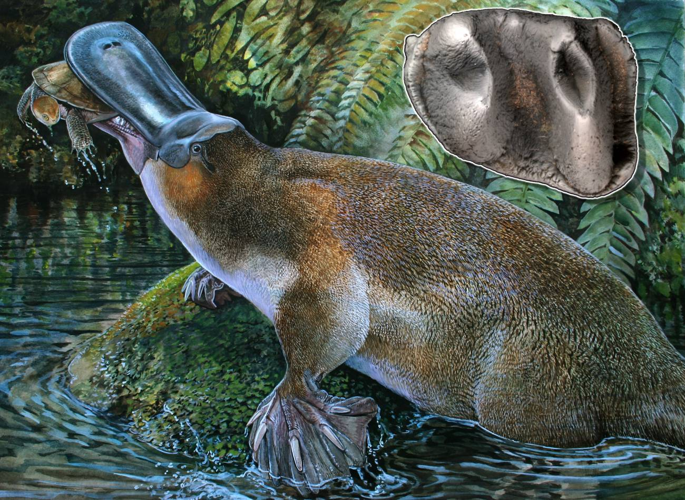

Ornitorrinco
(Ornithorhynchus anatinus)
Los ornitorrincos son originarios de Australia y de la isla de Tasmania.
Son semiacuáticos, es decir que viven en el agua (siempre en zonas de agua dulce), y en la tierra.
Sus hábitats suelen ser ríos y riachuelos de pequeño tamaño extendidos por diversos tipos de ecosistemas.

- Sus crías son alimentadas por leche materna.
- Las hembras no tienen pezones.
- Son los únicos mamíferos venenosos que existen.
- Los machos tienen un espolón que libera un veneno.
- Pueden medir entre 30 y 60 centímetros de longitud y pesar entre 1 y 2,5 kilogramos los machos y 0,7 y 1,6 kilogramos las hembras.
MENU PRINCIPAL